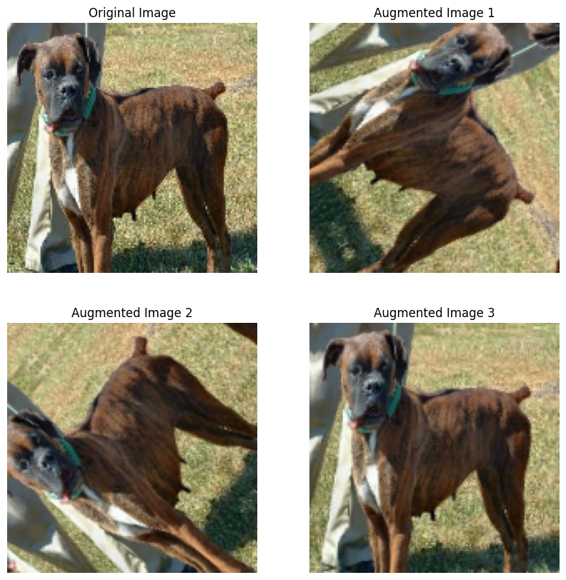

#packages given in blog post
import os
from keras import utils
import tensorflow_datasets as tfds
#more required packages
import tensorflow as tf
from tensorflow import keras
from keras import datasets, layers, models
import matplotlib.pyplot as plt
import matplotlib.image as mpimg
import numpy as npCats vs. Dogs: Image Classification
Introduction and Dataset Set-Up
Today, we will use Keras and Tensorflow to create a machine learning algorithm that can distinguish images of dog from images of cats through Image Classification. Image Classification is a very useful skill that can be used in real world projects. Additionally, it is a great exercise to help hone your understanding of machine learning. We will implement 4 different models and compare the accuracy of each. By doing so, we will learn about multiple methods but also see which methods are the most successful. Please follow along with the code in this blog post to create your own algorithms!
As always, we will start out by importing the following packages so that we can successfully implement these models and make plots that allow us to compare results. Please run the code cell below to import each of the packages.
Next, we must upload our data set. Our data set will be comprised of different pictures of both cats and dogs from Kaggle. Please run the following code cell to import our data.
#uploads images (code given in blog post)
train_ds, validation_ds, test_ds = tfds.load(
"cats_vs_dogs",
# 40% for training, 10% for validation, and 10% for test (the rest unused)
split=["train[:40%]", "train[40%:50%]", "train[50%:60%]"],
as_supervised=True, # Include labels
)
print(f"Number of training samples: {train_ds.cardinality()}")
print(f"Number of validation samples: {validation_ds.cardinality()}")
print(f"Number of test samples: {test_ds.cardinality()}")Downloading and preparing dataset 786.67 MiB (download: 786.67 MiB, generated: 1.04 GiB, total: 1.81 GiB) to /root/tensorflow_datasets/cats_vs_dogs/4.0.1...
Dataset cats_vs_dogs downloaded and prepared to /root/tensorflow_datasets/cats_vs_dogs/4.0.1. Subsequent calls will reuse this data.
Number of training samples: 9305
Number of validation samples: 2326
Number of test samples: 2326WARNING:absl:1738 images were corrupted and were skippedWe have successfully accessed thousands photos that we can use in our various models for training, validation, and testing! Now, we must ensure that all of ours images are the same size. Please run the code cell below and resize teh images to a set size of 150 by 150.
#resize code from blog post
resize_fn = keras.layers.Resizing(150, 150)
train_ds = train_ds.map(lambda x, y: (resize_fn(x), y))
validation_ds = validation_ds.map(lambda x, y: (resize_fn(x), y))
test_ds = test_ds.map(lambda x, y: (resize_fn(x), y))The next code cell will allow us to rapidly read data and determine how many data points are gathered from the directory at once. Please run the following code cell before proceeding.
from tensorflow import data as tf_data
batch_size = 64
train_ds = train_ds.batch(batch_size).prefetch(tf_data.AUTOTUNE).cache()
validation_ds = validation_ds.batch(batch_size).prefetch(tf_data.AUTOTUNE).cache()
test_ds = test_ds.batch(batch_size).prefetch(tf_data.AUTOTUNE).cache()In the next few steps, we will be better organizing and understanding our dataset.
We will now use the take method to retrieve an image from a batch of the training data. I selected one image of a dog and another of a cat by implementing the following two cells of code. Please run the cells below.
#selecting dog image from training batch
for batch in train_ds.take(1):
single_image = batch[0].numpy().astype("uint8")
single_image = single_image[0]
#display image on our marked grid
plt.imshow(single_image)
plt.show()
#selecting cat image from training
for batch in train_ds.take(81):
single_image = batch[0].numpy().astype("uint8")
single_image = single_image[0]
#display image on our marked grid
plt.imshow(single_image)
plt.show()We will now write a function that organizes our photos into two rows. This will simply make it easier to visualize and work with our data. The first row will display three random photos of cats and the second row will show three random photos of dogs. Please run the cell below to implement our function.
#allows us to organize our images by the name of the animal
class_names = { 0: "Cat", 1: "Dog"}
#function that organizes the dog and cat photos into two given rows with appropriate labels
def visualize_dataset(dataset, class_names):
plt.figure(figsize=(15, 8))
for subset in dataset.take(1):
images = batch[0].numpy().astype("uint8")
labels = batch[1].numpy()
i = 0
d_count = 0
c_count = 0
cats = []
dogs = []
while c_count < 3:
if labels [i] == 0:
cats.append(images[i])
c_count += 1
i += 1
i = 0
while d_count < 3:
if labels [i] == 1:
dogs.append(images[i])
d_count += 1
i += 1
for i in range(3):
ax = plt.subplot(2, 3, i + 1)
plt.imshow(cats[i])
plt.title(class_names[0])
plt.axis("off")
for i in range(3):
ax = plt.subplot(2, 3, 3 + i + 1)
plt.imshow(dogs[i])
plt.title(class_names[1])
plt.axis("off")
plt.show()
#display our two rows
visualize_dataset(train_ds, class_names)
After successfully organizing our photos into rows, we will now run the following cell to create an iterator. Please run the code cell below to implement this step.
#creates an iterator (given in blog post)
labels_iterator= train_ds.unbatch().map(lambda image, label: label).as_numpy_iterator()We will create the following dictionary so that we may differentiate between the strings “Cat” and “Dog”.
class_names = { 0: "Cat", 1: "Dog"}In order to determine the baseline for our machine learning model, we must know the number of images displaying cats and the number of images displaying dogs. In the following cell, we will use our iterator to compute these numbers. Please run the following code cell.
#compute the number of images in training data set
#sets our image count to zero to start
cat_count = 0
dog_count = 0
#loop will count images containing dogs and images containing cats
for label_value in labels_iterator:
if label_value == 0:
cat_count += 1
elif label_value == 1:
dog_count += 1
#displays our results
print("Number of images displaying cats:", cat_count)
print("Number of images displaying dogs:", dog_count)Number of images displaying cats: 4637
Number of images displaying dogs: 4668As we can see above, the number of images displaying dogs and the number of images displaying cats in our dataset are both very similar. Each range between 4600 and 4700 total images. This means that we are working with a training dataset of 9305 photos. Now we can calculate our baseline accuracy. Our baseline machine learning model will guess the most frequent label. There are more dog images than cat images so we can infer that our baseline model would sort the images as “dog”. We can determine our baseline accuracy by dividing the total number of dog images by the total number of images. This is equivalent to 4668 divided by 9305. Thus, our baseline accuracy is about 0.5017. Logically, this makes sense as almost half of the total photos are photos of dogs. In order for our models to be considered accurate and successful, we should see accuracy results that are greater than about 0.50. Now that we have organized our dataset and determined our baseline accuracy, we are ready to start implemementing our four different models.
First Model
This first model is anticipated to be the least accurate. In this method, we will use layers that we defined in class to train our machine to sort our different images. We will include Conv2D layers, MaxPooling2D layers, Flatten layers, Dense layers, and Dropout layers. Please run the following code cell to define this model.
#model1 definition
model1 = keras.Sequential([
#our required layers:
layers.Conv2D(32, (3, 3), activation='relu', input_shape=(150, 150, 3)),
layers.MaxPooling2D((2, 2)),
layers.Conv2D(64, (3, 3), activation='relu'),
layers.MaxPooling2D((2, 2)),
layers.Flatten(),
layers.Dense(128, activation='relu'),
layers.Dropout(0.5),
layers.Dense(64, activation='relu'),
layers.Dropout(0.3),
layers.Dense(10, activation='softmax')
])Now that we have used the keras.Sequential to create our model and define all of the necessary layers, we can train our model using the code in the following cell. Please note that this may take a few minutes to completely finish running. Please run the code cell and train our model.
#allows model1 to compile
model1.compile(optimizer='adam',
loss=keras.losses.SparseCategoricalCrossentropy(from_logits=True),
metrics=['accuracy'])
#given in blog post instructions.
history_model_1 = model1.fit(train_ds,
epochs=20,
validation_data=validation_ds)Epoch 1/20
146/146 [==============================] - 14s 55ms/step - loss: 16.6655 - accuracy: 0.5071 - val_loss: 0.7008 - val_accuracy: 0.5636
Epoch 2/20
146/146 [==============================] - 5s 33ms/step - loss: 0.8050 - accuracy: 0.5531 - val_loss: 0.7235 - val_accuracy: 0.6036
Epoch 3/20
146/146 [==============================] - 5s 32ms/step - loss: 0.7339 - accuracy: 0.5963 - val_loss: 0.6713 - val_accuracy: 0.5890
Epoch 4/20
146/146 [==============================] - 5s 33ms/step - loss: 0.6774 - accuracy: 0.6547 - val_loss: 0.6842 - val_accuracy: 0.6264
Epoch 5/20
146/146 [==============================] - 5s 32ms/step - loss: 0.6099 - accuracy: 0.7025 - val_loss: 0.7092 - val_accuracy: 0.6225
Epoch 6/20
146/146 [==============================] - 5s 37ms/step - loss: 0.5599 - accuracy: 0.7280 - val_loss: 0.7178 - val_accuracy: 0.6328
Epoch 7/20
146/146 [==============================] - 5s 33ms/step - loss: 0.4879 - accuracy: 0.7755 - val_loss: 0.9081 - val_accuracy: 0.6221
Epoch 8/20
146/146 [==============================] - 5s 33ms/step - loss: 0.4251 - accuracy: 0.8101 - val_loss: 0.9148 - val_accuracy: 0.6144
Epoch 9/20
146/146 [==============================] - 5s 33ms/step - loss: 0.4117 - accuracy: 0.8192 - val_loss: 0.9019 - val_accuracy: 0.6135
Epoch 10/20
146/146 [==============================] - 5s 33ms/step - loss: 0.3669 - accuracy: 0.8572 - val_loss: 0.9012 - val_accuracy: 0.6217
Epoch 11/20
146/146 [==============================] - 5s 33ms/step - loss: 0.3177 - accuracy: 0.8692 - val_loss: 1.0913 - val_accuracy: 0.6156
Epoch 12/20
146/146 [==============================] - 5s 35ms/step - loss: 0.2667 - accuracy: 0.8955 - val_loss: 1.3066 - val_accuracy: 0.6255
Epoch 13/20
146/146 [==============================] - 5s 33ms/step - loss: 0.2635 - accuracy: 0.9015 - val_loss: 1.1932 - val_accuracy: 0.6333
Epoch 14/20
146/146 [==============================] - 5s 33ms/step - loss: 0.2101 - accuracy: 0.9243 - val_loss: 1.1485 - val_accuracy: 0.6384
Epoch 15/20
146/146 [==============================] - 5s 34ms/step - loss: 0.1909 - accuracy: 0.9348 - val_loss: 1.3259 - val_accuracy: 0.6285
Epoch 16/20
146/146 [==============================] - 5s 33ms/step - loss: 0.1743 - accuracy: 0.9390 - val_loss: 1.3392 - val_accuracy: 0.6328
Epoch 17/20
146/146 [==============================] - 5s 36ms/step - loss: 0.1924 - accuracy: 0.9340 - val_loss: 1.4034 - val_accuracy: 0.6260
Epoch 18/20
146/146 [==============================] - 5s 33ms/step - loss: 0.1727 - accuracy: 0.9421 - val_loss: 1.2522 - val_accuracy: 0.6187
Epoch 19/20
146/146 [==============================] - 5s 33ms/step - loss: 0.1519 - accuracy: 0.9458 - val_loss: 1.3135 - val_accuracy: 0.6277
Epoch 20/20
146/146 [==============================] - 5s 34ms/step - loss: 0.1589 - accuracy: 0.9456 - val_loss: 1.2940 - val_accuracy: 0.6225/usr/local/lib/python3.10/dist-packages/keras/src/backend.py:5727: UserWarning: "`sparse_categorical_crossentropy` received `from_logits=True`, but the `output` argument was produced by a Softmax activation and thus does not represent logits. Was this intended?
output, from_logits = _get_logits(Now that we have trained our model, we will plot the history of our model’s accuracy using both the training and validation sets. We will create a line graph using the package “Matplotlib” (imported in the beginning of this post). We will use this plot to further understand how the accuracy of our first model. Please run the code below.
plt.plot(history_model_1.history['accuracy'], label='TRAINING ACCURACY')
plt.plot(history_model_1.history['val_accuracy'], label='VALIDATION ACCURACY')
plt.xlabel('EPOCHS')
plt.ylabel('ACCURACY')
plt.title('MODEL 1: ACCURACY COMPARSION')
plt.legend()
plt.show()The validation accuracy of model 1 is about 64% (in between 60% and 65%).
I found the measurement bylooking at my graph and estimating the highest accuracy value (y-axis) for the Validation accuracy line (orange plot).
In comparison to the baseline accuracy, we can conclude that my model 1 is more accurate (about 10% more successful). This makes sense but leads me to believe that this still may not be the best model overall.
Overfitting can occur at points where the training accuracy is much higher than the validation accuracy. There are signs of overfitting as the training model produces an accuracy over 90% while validation accuracy for model 1 never experiences an accuracy that exceeds 65%. By adjusting our model, we may be able to avoid overfitting in the future.
Second Model
In this next model, we are going to use data augmentation layers. This will involve us including layers that include modified copies of the same image in the training set. For our purposes, we will include data augmentation layers that rotate the images in hopes of seeing a higher accuracy. These slight changes in the versions of our images are called invariant features. They will help our model further understand the differences between the cat and dog images.
We will start by defining a function that allows us to complete data augmentation. This function will allow us to output a 2 by 2 grid of the same photo. Each photo should have a slightly different rotation. Please run the code cell below.
#function allows us to implement data augmentation and outputs images with the appropriate labels
def augmented(train_ds, data_augmentation):
plt.figure(figsize=(10, 10))
for image, _ in train_ds.take(1):
original_image = image[0]
ax = plt.subplot(2, 2, 1)
plt.imshow(original_image / 255)
plt.axis('off')
ax.set_title('Original Image')
#display original and augemented images in a 2 by 2 grid
for i in range(2, 5):
ax = plt.subplot(2, 2, i)
augmented_image = data_augmentation(tf.expand_dims(original_image, 0))
plt.imshow(augmented_image[0] / 255)
plt.axis('off')
ax.set_title(f'Augmented Image {i - 1}')
#displays results
plt.show()Now that we have defined our function, we can implement different forms of data augmentation onto our images. First, we will create a keras.layer.RandomFlip() that takes the original image and then flips it for a few instances in our grid. The image will appear as a mirrored image of our original photo. Please run the code cell below to create this first data augmentation layer.
#first data augmentation layer
data_augmentation_1 = tf.keras.Sequential([
tf.keras.layers.RandomFlip('horizontal'),
])
augmented(train_ds, data_augmentation_1)As we can see in our grid of images above, the original image and second image show the original photo. However, the bottom first and third images appear as a mirrored version of the original.
For our second data augmentation layer, we will create a keras.layers.RandomRotation() layer that rotates the entire image in either the clockwise or counterclockwise direction. Please run the code cell below to create this second layer.
#second data augmentation layer
data_augmentation_2 = tf.keras.Sequential([
tf.keras.layers.RandomRotation(0.2),
])
augmented(train_ds, data_augmentation_2)
Now that we have sucessfully created two different data augmentation layers, we can train our model and create our visualization. We will define model 2 using keras.Sequential just as we did for model 1. The main difference here will be the two new layers that we will incorporate into our model. Please run the code cell below to define our secind model.
model2 = keras.models.Sequential([
#new layers (defined above)
layers.RandomFlip("horizontal", input_shape=(150, 150, 3)),
layers.RandomRotation(0.2),
#extra layers (model1)
layers.Conv2D(32, (3, 3), activation='relu'),
layers.MaxPooling2D((2, 2)),
layers.Conv2D(64, (3, 3), activation='relu'),
layers.MaxPooling2D((2, 2)),
layers.Flatten(),
layers.Dense(128, activation='relu'),
layers.Dropout(0.5),
layers.Dense(64, activation='relu'),
layers.Dropout(0.3),
layers.Dense(10, activation='softmax')
])Now that we have included our new layers in model 2, we can run the code cell below to compile and train our model while also extracting the information we need to determine the accuracy. Please run the code below.
#allows model2 to compile
model2.compile(optimizer='adam',
loss='sparse_categorical_crossentropy',
metrics=['accuracy'])
#given in blog post instructions
history_model2 = model2.fit(train_ds,
epochs=20,
validation_data=validation_ds)Epoch 1/20
146/146 [==============================] - 7s 35ms/step - loss: 11.5206 - accuracy: 0.5083 - val_loss: 0.7474 - val_accuracy: 0.5486
Epoch 2/20
146/146 [==============================] - 5s 37ms/step - loss: 0.8137 - accuracy: 0.5362 - val_loss: 0.7817 - val_accuracy: 0.5907
Epoch 3/20
146/146 [==============================] - 5s 34ms/step - loss: 0.7655 - accuracy: 0.5370 - val_loss: 0.6930 - val_accuracy: 0.6105
Epoch 4/20
146/146 [==============================] - 6s 38ms/step - loss: 0.7324 - accuracy: 0.5686 - val_loss: 0.6570 - val_accuracy: 0.6195
Epoch 5/20
146/146 [==============================] - 5s 35ms/step - loss: 0.7105 - accuracy: 0.5851 - val_loss: 0.6499 - val_accuracy: 0.6509
Epoch 6/20
146/146 [==============================] - 5s 35ms/step - loss: 0.7004 - accuracy: 0.5922 - val_loss: 0.6346 - val_accuracy: 0.6509
Epoch 7/20
146/146 [==============================] - 5s 34ms/step - loss: 0.6769 - accuracy: 0.6169 - val_loss: 0.6230 - val_accuracy: 0.6870
Epoch 8/20
146/146 [==============================] - 5s 37ms/step - loss: 0.6719 - accuracy: 0.6159 - val_loss: 0.6213 - val_accuracy: 0.6707
Epoch 9/20
146/146 [==============================] - 5s 35ms/step - loss: 0.6547 - accuracy: 0.6376 - val_loss: 0.6542 - val_accuracy: 0.6066
Epoch 10/20
146/146 [==============================] - 5s 37ms/step - loss: 0.6598 - accuracy: 0.6243 - val_loss: 0.6001 - val_accuracy: 0.6991
Epoch 11/20
146/146 [==============================] - 5s 35ms/step - loss: 0.6482 - accuracy: 0.6428 - val_loss: 0.6273 - val_accuracy: 0.6522
Epoch 12/20
146/146 [==============================] - 5s 36ms/step - loss: 0.6463 - accuracy: 0.6443 - val_loss: 0.6163 - val_accuracy: 0.6698
Epoch 13/20
146/146 [==============================] - 5s 36ms/step - loss: 0.6460 - accuracy: 0.6402 - val_loss: 0.6158 - val_accuracy: 0.6917
Epoch 14/20
146/146 [==============================] - 5s 35ms/step - loss: 0.6377 - accuracy: 0.6509 - val_loss: 0.6059 - val_accuracy: 0.6943
Epoch 15/20
146/146 [==============================] - 5s 37ms/step - loss: 0.6275 - accuracy: 0.6644 - val_loss: 0.6010 - val_accuracy: 0.6917
Epoch 16/20
146/146 [==============================] - 5s 35ms/step - loss: 0.6280 - accuracy: 0.6629 - val_loss: 0.5989 - val_accuracy: 0.6917
Epoch 17/20
146/146 [==============================] - 5s 35ms/step - loss: 0.6211 - accuracy: 0.6689 - val_loss: 0.5989 - val_accuracy: 0.6905
Epoch 18/20
146/146 [==============================] - 5s 35ms/step - loss: 0.6227 - accuracy: 0.6672 - val_loss: 0.6063 - val_accuracy: 0.6823
Epoch 19/20
146/146 [==============================] - 5s 35ms/step - loss: 0.6188 - accuracy: 0.6693 - val_loss: 0.5964 - val_accuracy: 0.6991
Epoch 20/20
146/146 [==============================] - 5s 35ms/step - loss: 0.6134 - accuracy: 0.6740 - val_loss: 0.5959 - val_accuracy: 0.7038We will create another line graph using Matplotlib and the information for model 2. Please run the code cell below to create our visualization.
plt.plot(history_model2.history['accuracy'], label='TRAINING ACCURACY')
plt.plot(history_model2.history['val_accuracy'], label='VALIDATION ACCURACY')
plt.xlabel('EPOCHS')
plt.ylabel('ACCURACY')
plt.title('MODEL 2_ ACCURACY COMPARISON')
plt.legend()
plt.show()
The validation accuracy of model 2 is about 68% (in between 66 and 70%).
I found the measurement by looking at my graph and estimating the highest accuracy value (y-axis) for the Validation accuracy line (orange plot).
In comparison to the model 1 validation accuracy, we can conclude that my model 2 is more accurate (about 4% more successful). This makes sense as my second model was more detailed but still very similar to model 1.
Overfitting does not seem to occur with this model. The validation accuracy seems to always exceed the training accuracy. Even though this conclusion surprised me, it is a good sign that my model is improving and becoming more accurate.
Third Model
For our third model, we will include data preprocessing layers. The data is containeded in scale described by pixels with RGB values. As of right now, our RGB values are in between 0 and 255 which causes the model to take longer to train. These layers will allows us to focus more of our algorithm’s training energy on the data and less on the scale.
We will include the following code from the blog post instructions to create a preprocessing layer called preprocessor. Please run the following code cell.
#given in instructions
i = keras.Input(shape=(150, 150, 3))
#the pixel values have the range of (0, 255), but many models will work better if rescaled to (-1, 1.)
#outputs: `(inputs * scale) + offset`
scale_layer = keras.layers.Rescaling(scale=1 / 127.5, offset=-1)
x = scale_layer(i)
preprocessor = keras.Model(inputs = i, outputs = x)We can now define our model3 using our new preprocessing layer as well as the layers we defined for model2. Please run the code cell below.
model3 = keras.Sequential([
#new layer (defined above)
preprocessor,
#data augmentation layer (model2)
layers.RandomFlip("horizontal", input_shape=(150, 150, 3)),
layers.RandomRotation(0.2),
#updated original layers (model1)
layers.Conv2D(64, (3, 3), activation='LeakyReLU'),
layers.MaxPooling2D((2, 2)),
layers.Conv2D(128, (3, 3), activation='relu'),
layers.MaxPooling2D((2, 2)),
layers.Conv2D(256, (3, 3), activation='LeakyReLU'),
layers.MaxPooling2D((2, 2)),
layers.Conv2D(512, (3, 3), activation='relu'),
layers.MaxPooling2D((2, 2)),
layers.Flatten(),
layers.Dense(1024, activation='relu'),
layers.Dropout(0.5),
layers.Dense(512, activation='LeakyReLU'),
layers.Dropout(0.3),
layers.Dense(10, activation='softmax')
])Now that we have included our new layers in model 3, we can run the code cell below to compile and train our model while also extracting the information we need to determine the accuracy. Please run the code below.
#allows model3 to compile
model3.compile(optimizer='adam',
loss='sparse_categorical_crossentropy',
metrics=['accuracy'])
#given in blog post instructions
history_model_3 = model3.fit(train_ds,
epochs=20,
validation_data=validation_ds)Epoch 1/20
146/146 [==============================] - 28s 142ms/step - loss: 0.7791 - accuracy: 0.5318 - val_loss: 0.6546 - val_accuracy: 0.6543
Epoch 2/20
146/146 [==============================] - 18s 121ms/step - loss: 0.6626 - accuracy: 0.5999 - val_loss: 0.5969 - val_accuracy: 0.6887
Epoch 3/20
146/146 [==============================] - 18s 121ms/step - loss: 0.6060 - accuracy: 0.6676 - val_loss: 0.5720 - val_accuracy: 0.7072
Epoch 4/20
146/146 [==============================] - 18s 120ms/step - loss: 0.5772 - accuracy: 0.7030 - val_loss: 0.5285 - val_accuracy: 0.7485
Epoch 5/20
146/146 [==============================] - 18s 120ms/step - loss: 0.5381 - accuracy: 0.7290 - val_loss: 0.4879 - val_accuracy: 0.7730
Epoch 6/20
146/146 [==============================] - 18s 120ms/step - loss: 0.5149 - accuracy: 0.7487 - val_loss: 0.4506 - val_accuracy: 0.7889
Epoch 7/20
146/146 [==============================] - 18s 121ms/step - loss: 0.4734 - accuracy: 0.7742 - val_loss: 0.4162 - val_accuracy: 0.8151
Epoch 8/20
146/146 [==============================] - 18s 120ms/step - loss: 0.4544 - accuracy: 0.7857 - val_loss: 0.3987 - val_accuracy: 0.8117
Epoch 9/20
146/146 [==============================] - 18s 120ms/step - loss: 0.4330 - accuracy: 0.8042 - val_loss: 0.4069 - val_accuracy: 0.8143
Epoch 10/20
146/146 [==============================] - 18s 120ms/step - loss: 0.4013 - accuracy: 0.8146 - val_loss: 0.3874 - val_accuracy: 0.8151
Epoch 11/20
146/146 [==============================] - 18s 120ms/step - loss: 0.3773 - accuracy: 0.8382 - val_loss: 0.3650 - val_accuracy: 0.8392
Epoch 12/20
146/146 [==============================] - 19s 129ms/step - loss: 0.3699 - accuracy: 0.8389 - val_loss: 0.3363 - val_accuracy: 0.8521
Epoch 13/20
146/146 [==============================] - 18s 120ms/step - loss: 0.3569 - accuracy: 0.8440 - val_loss: 0.3306 - val_accuracy: 0.8504
Epoch 14/20
146/146 [==============================] - 18s 121ms/step - loss: 0.3483 - accuracy: 0.8457 - val_loss: 0.3202 - val_accuracy: 0.8577
Epoch 15/20
146/146 [==============================] - 18s 120ms/step - loss: 0.3296 - accuracy: 0.8556 - val_loss: 0.3029 - val_accuracy: 0.8706
Epoch 16/20
146/146 [==============================] - 18s 120ms/step - loss: 0.3111 - accuracy: 0.8676 - val_loss: 0.3026 - val_accuracy: 0.8693
Epoch 17/20
146/146 [==============================] - 18s 120ms/step - loss: 0.3179 - accuracy: 0.8621 - val_loss: 0.2885 - val_accuracy: 0.8805
Epoch 18/20
146/146 [==============================] - 18s 120ms/step - loss: 0.3043 - accuracy: 0.8732 - val_loss: 0.2718 - val_accuracy: 0.8852
Epoch 19/20
146/146 [==============================] - 18s 120ms/step - loss: 0.2844 - accuracy: 0.8769 - val_loss: 0.2690 - val_accuracy: 0.8792
Epoch 20/20
146/146 [==============================] - 18s 120ms/step - loss: 0.2784 - accuracy: 0.8821 - val_loss: 0.2775 - val_accuracy: 0.8813We will now create our visualization using the code below.
plt.plot(history_model_3.history['accuracy'], label='TRAINING ACCURACY')
plt.plot(history_model_3.history['val_accuracy'], label='VALIDATION ACCURACY')
plt.xlabel('EPOCHS')
plt.ylabel('ACCURACY')
plt.title('MODEL 3: ACCURACY COMPARISON')
plt.legend()
plt.show()The validation accuracy of model 3 is about 87% (in between 87% and 90%).
I found the measurement by looking at my graph and estimating the highest accuracy value (y-axis) for the Validation accuracy line (orange plot).
In comparison to the model 1 validation accuracy, we can conclude that my model 3 is signficantly more accurate (about 20%-25% more successful). This makes sense as my third model is the most detailed one so far out of the three.
Overfitting does not really occur in the plot of this model’s accuracy as the validation accuracy is constantly greater than the training accuracy.
Fourth Model
There are many models rgar have already been trained to do related tasks. Even if the intended task is not exactly the same, there is a high probability that they have been trained to notice similar patterns and output similar results. For our fourth model, we will access a pre-existing “base model” to complete our current task of sorting images of dogs and cats. Please run the following code that was given in the blog post instructions.
#from blog post instructions
IMG_SHAPE = (150, 150, 3)
base_model = keras.applications.MobileNetV3Large(input_shape=IMG_SHAPE,
include_top=False,
weights='imagenet')
base_model.trainable = False
i = keras.Input(shape=IMG_SHAPE)
x = base_model(i, training = False)
base_model_layer = keras.Model(inputs = i, outputs = x)WARNING:tensorflow:`input_shape` is undefined or non-square, or `rows` is not 224. Weights for input shape (224, 224) will be loaded as the default.Downloading data from https://storage.googleapis.com/tensorflow/keras-applications/mobilenet_v3/weights_mobilenet_v3_large_224_1.0_float_no_top_v2.h5
12683000/12683000 [==============================] - 2s 0us/stepNow that we have a defined “base model”, we can create a new model using some of layers from our existing models. For our fourth and final model, we will include the layers defined above as well as the data augmentation layers that were included in both model 2 and model 3. We will also need to include some of the starter layers that we first introduced in model 1.
model4 = models.Sequential([
# augmentation layers
layers.RandomFlip("horizontal", input_shape=(150, 150, 3)),
layers.RandomRotation(0.2),
base_model_layer,
layers.GlobalMaxPooling2D(),
layers.Dropout(0.2),
layers.Dense(2, activation='softmax'), # outputs the final classification
])Now that we have our model, use the code cell below to determine the summary of the model’s accuracy.
# Compile the model
model4.compile(optimizer='adam',
loss='sparse_categorical_crossentropy',
metrics=['accuracy'])
model4.summary()Model: "sequential_5"
_________________________________________________________________
Layer (type) Output Shape Param #
=================================================================
random_flip_3 (RandomFlip) (None, 150, 150, 3) 0
random_rotation_3 (RandomR (None, 150, 150, 3) 0
otation)
model_1 (Functional) (None, 5, 5, 960) 2996352
global_max_pooling2d (Glob (None, 960) 0
alMaxPooling2D)
dropout_6 (Dropout) (None, 960) 0
dense_9 (Dense) (None, 2) 1922
=================================================================
Total params: 2998274 (11.44 MB)
Trainable params: 1922 (7.51 KB)
Non-trainable params: 2996352 (11.43 MB)
_________________________________________________________________Use the following code cell to determine history just as we have done for the previous three models.
history_model_4 = model4.fit(train_ds,
epochs=20,
validation_data=validation_ds)Epoch 1/20
146/146 [==============================] - 15s 64ms/step - loss: 1.4940 - accuracy: 0.8417 - val_loss: 0.2753 - val_accuracy: 0.9669
Epoch 2/20
146/146 [==============================] - 6s 43ms/step - loss: 0.7269 - accuracy: 0.9140 - val_loss: 0.3333 - val_accuracy: 0.9592
Epoch 3/20
146/146 [==============================] - 6s 43ms/step - loss: 0.5694 - accuracy: 0.9256 - val_loss: 0.2105 - val_accuracy: 0.9712
Epoch 4/20
146/146 [==============================] - 6s 43ms/step - loss: 0.5304 - accuracy: 0.9283 - val_loss: 0.1809 - val_accuracy: 0.9703
Epoch 5/20
146/146 [==============================] - 6s 43ms/step - loss: 0.4488 - accuracy: 0.9341 - val_loss: 0.2300 - val_accuracy: 0.9600
Epoch 6/20
146/146 [==============================] - 6s 43ms/step - loss: 0.4191 - accuracy: 0.9318 - val_loss: 0.1424 - val_accuracy: 0.9733
Epoch 7/20
146/146 [==============================] - 6s 43ms/step - loss: 0.3847 - accuracy: 0.9334 - val_loss: 0.2245 - val_accuracy: 0.9617
Epoch 8/20
146/146 [==============================] - 6s 44ms/step - loss: 0.3594 - accuracy: 0.9382 - val_loss: 0.1431 - val_accuracy: 0.9695
Epoch 9/20
146/146 [==============================] - 6s 43ms/step - loss: 0.3263 - accuracy: 0.9362 - val_loss: 0.1258 - val_accuracy: 0.9729
Epoch 10/20
146/146 [==============================] - 6s 43ms/step - loss: 0.3442 - accuracy: 0.9337 - val_loss: 0.1430 - val_accuracy: 0.9725
Epoch 11/20
146/146 [==============================] - 6s 42ms/step - loss: 0.3117 - accuracy: 0.9341 - val_loss: 0.1328 - val_accuracy: 0.9746
Epoch 12/20
146/146 [==============================] - 6s 43ms/step - loss: 0.2531 - accuracy: 0.9422 - val_loss: 0.1193 - val_accuracy: 0.9721
Epoch 13/20
146/146 [==============================] - 6s 44ms/step - loss: 0.2852 - accuracy: 0.9332 - val_loss: 0.1046 - val_accuracy: 0.9742
Epoch 14/20
146/146 [==============================] - 6s 42ms/step - loss: 0.2595 - accuracy: 0.9390 - val_loss: 0.1241 - val_accuracy: 0.9665
Epoch 15/20
146/146 [==============================] - 6s 43ms/step - loss: 0.2654 - accuracy: 0.9370 - val_loss: 0.1161 - val_accuracy: 0.9695
Epoch 16/20
146/146 [==============================] - 6s 43ms/step - loss: 0.2700 - accuracy: 0.9353 - val_loss: 0.1018 - val_accuracy: 0.9742
Epoch 17/20
146/146 [==============================] - 6s 43ms/step - loss: 0.2752 - accuracy: 0.9341 - val_loss: 0.1429 - val_accuracy: 0.9643
Epoch 18/20
146/146 [==============================] - 6s 43ms/step - loss: 0.2929 - accuracy: 0.9352 - val_loss: 0.1529 - val_accuracy: 0.9652
Epoch 19/20
146/146 [==============================] - 6s 42ms/step - loss: 0.2891 - accuracy: 0.9311 - val_loss: 0.1177 - val_accuracy: 0.9725
Epoch 20/20
146/146 [==============================] - 6s 44ms/step - loss: 0.3265 - accuracy: 0.9304 - val_loss: 0.1335 - val_accuracy: 0.9729Finally, we can plot the validation accuracy and the training accuracy.
plt.plot(history_model_4.history['accuracy'], label='TRAINING ACCURACY')
plt.plot(history_model_4.history['val_accuracy'], label='VALIDATION ACCURACY')
plt.xlabel('EPOCHS')
plt.ylabel('ACCURACY')
plt.title('MODEL 4: ACCURACY COMPARISON')
plt.legend()
plt.show()The validation accuracy of model 3 is about 97% (in between 96% and 98%).
I found the measurement by looking at my graph and estimating the highest accuracy value (y-axis) for the Validation accuracy line (orange plot).
In comparison to all of our models, this is the model with the best accuracy as the validation accuracy is constantly above 96%.
Overfitting does not really occur in the plot of this model’s accuracy as the validation accuracy is constantly greater than the training accuracy.
We have successfully implemented our fourth and final model and gathered the information regarding model accuracy.
Test Accuracy
As model 4 is clearly the most accurate out of all four models, with a 97% validation accuracy rate, we will use test_ds to evaluate the accuracy. Please complete this step by running the code cell below.
test_loss, test_accuracy = model4.evaluate(test_ds)
print(f'Test Accuracy: {test_accuracy * 100:.2f}%')37/37 [==============================] - 3s 68ms/step - loss: 0.1688 - accuracy: 0.9695
Test Accuracy: 96.95%The test we ran above is almost exactly the same as the validation accuracy we see in our plot for model 4. This is great indication that our model was both successful and accurate in classifying our images in our dataset.
Thank you for reading this post about image classification!